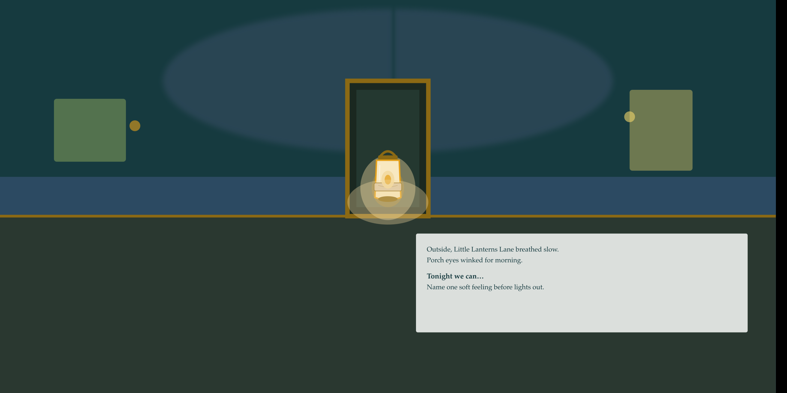

Our Story
Little Lanterns
A small press for soft nights.
We make warm picture books for ages 6–8 — stories that delight young readers and leave caregivers feeling close, not coached.

Why we exist
Bedtime is already full. Caregivers don’t need another lecture disguised as a story. They need a short, beautiful shared read that settles the house — wonder first, quiet truth underneath.
Little Lanterns grew from that porch-side need: indie picture books where a handmade night-lantern can hold a feeling without fixing it. Soft light is still brave light.


Who we make books for
Early-elementary kids (about ages 6–8) finding their way through new rooms, shy feelings, and big-kid bedtimes — and the grown-ups who read with them.
Gift-givers and grandparents are welcome too. What we skip on purpose: worksheet energy, anxiety-workbook covers, and vague “ages 3–10” books that miss the child in front of you.
How we work
Quality over volume. One carefully made book at a time — manuscript locked, art kept consistent, print files reviewed before any retailer listing. We are a small indie press, not a catalog mill.
Our debut series, Little Lanterns Lane, follows a simple promise: each story pairs a child with a lantern tuned to a feeling-skill — patience, apology, asking for help — told with porch-folklore warmth, never as a counseling pamphlet.
Come sit with the books.
Start with Book 1, The Softest Glow, or browse the line as it grows.